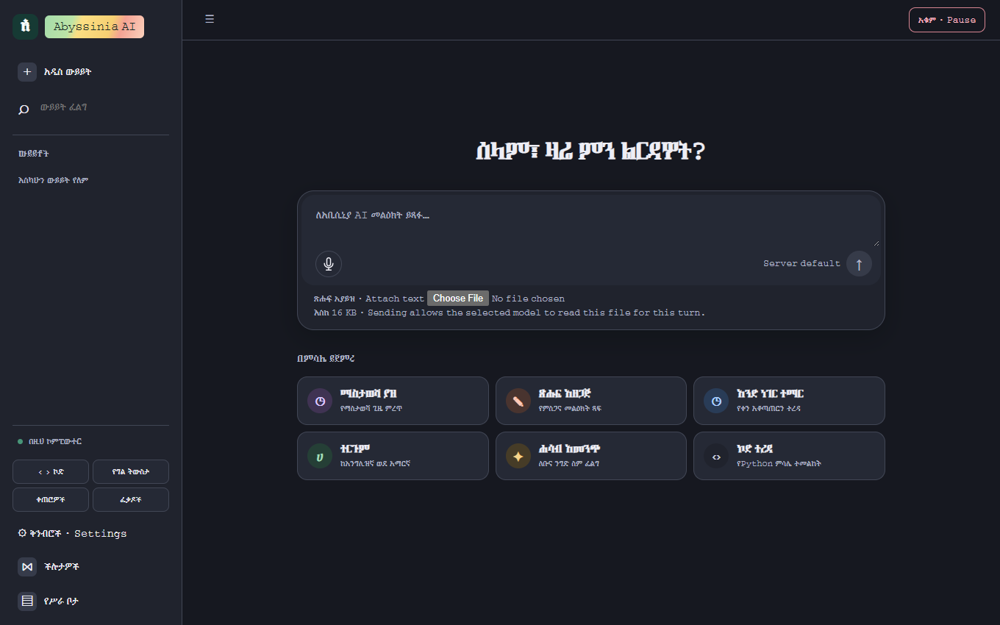

Windows
ውይይት፣ ፋይሎች፣ ቀጠሮዎች እና የኮድ ሥራዎች።
- Run the EXE on Windows x64.
- In the folder that opens, run Setup Abyssinia Engine.cmd once.
- Run Open Abyssinia AI.cmd. In Settings, connect your provider and start a chat.
A-K-E-T-O-A-I
ጥያቄ ይጠይቁ፣ ሐሳብ ያዳብሩ፣ ዕለታዊ ሥራዎን ያቀላጥፉ።
An Amharic-first assistant for your Windows PC and Android phone. Bring your preferred model.

ውይይት፣ ፋይሎች፣ ቀጠሮዎች እና የኮድ ሥራዎች።
ከስልክዎ ላይ በቀጥታ ያውሩ። ኮምፒውተር አያስፈልግም።